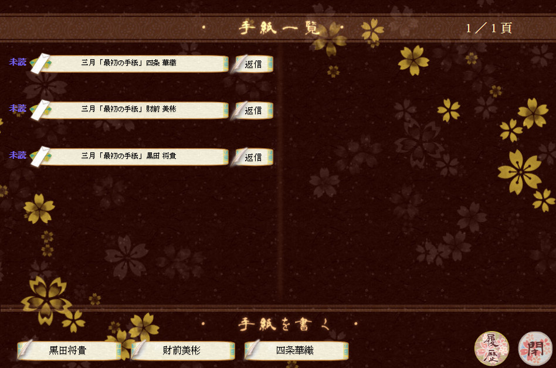

|
華族の娘にしてはお転婆気味の幼少期を過ごした主人公だが、淑女を夢見る十六歳となった。 父の見立てた男性たちと、文通を交わすことになるが…… |
プロローグ |
お好きな名前を入力して決定を押すと、物語が始まります。 |
|---|---|
お稽古画面 |
淑女を目指してお稽古に励みながら、文通でお相手と心を通わせて仲を深めます。 画面下部の「茶道」などのボタンを押すとお稽古ができます。 |
|
お稽古をすると「淑女度」や「熟練度」が上昇します。 「体力」「気力」は下記のように上昇します。 茶道、礼法…「体力」 華道、語学…「気力」 お箏…「体力」「気力」どちらかランダム |
|
文箱 |
お稽古画面右上の「文箱」では、届いたお手紙を読み返したり、こちらからお手紙を書くことができます。 届いたお手紙は画面上部の「一覧」に表示されます。返信を溜めてしまうと、お手紙が届かなくなり文通が途絶えてしまいますので、ご注意を。 画面下部には、その時に文通できるお相手の名前が表示されています。気になる方には、こちらからもお手紙を書いてみましょう。 |
散策 |
お稽古画面上の「散策」から、散策に出ることができます。 お手紙の話題を得るイベントが発生することもあります。話題作りやお稽古の合間の気分転換に、時々散策に出てみましょう。 |
いつか、会える日お手紙のやりとりで深く心を通わせると、お相手と会えるようになるかもしれません。 | |
| Copyright ©2017 恋綴り製作委員会 All rights reserved. |